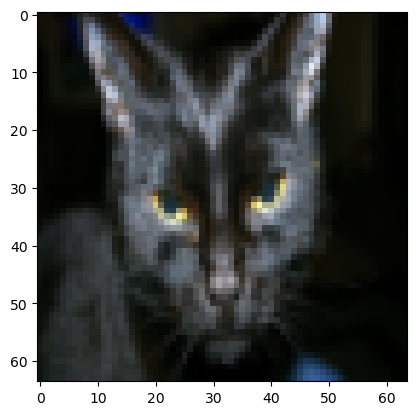
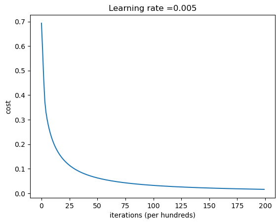
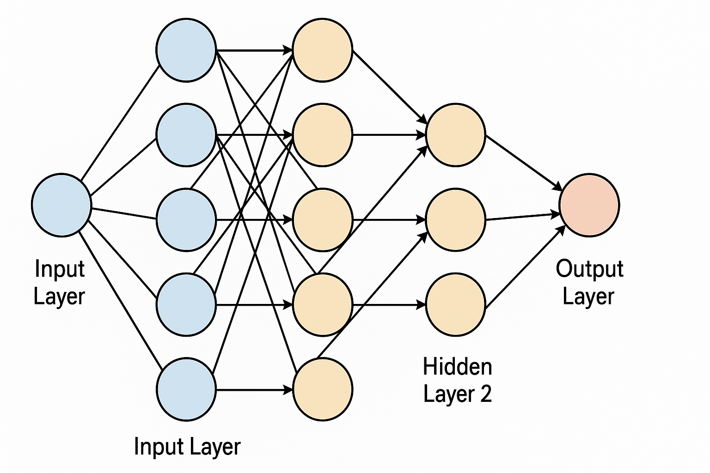

# make sure to have these libraries installed. you can use pip install <library>
import numpy as np
import matplotlib.pyplot as plt
import h5py
import scipy
from PIL import Image
from scipy import ndimage
# notice the lr_utils needs to be in the same directory of your notebook
from lr_utils import load_dataset
%matplotlib inlineLogistic Regression with a Neural Network mindset
This is an assigment from Andrew Ng’s Deep Learning Specialization. I solved the assignment, and believe this is one of the most interesting learning exercises to see the building blocks of neural networks.
I removed some unecessary text, but other than that, this is heavily taken from Andres Ng’s course.
Instructions: - Do not use loops (for/while) in your code, unless the instructions explicitly ask you to do so.
You will learn to: - Build the general architecture of a learning algorithm, including: - Initializing parameters - Calculating the cost function and its gradient - Using an optimization algorithm (gradient descent) - Gather all three functions above into a main model function, in the right order.
1 - Packages
First, let’s run the cell below to import all the packages that you will need during this assignment. - numpy is the fundamental package for scientific computing with Python. - h5py is a common package to interact with a dataset that is stored on an H5 file. - matplotlib is a famous library to plot graphs in Python. - PIL and scipy are used here to test your model with your own picture at the end.
2 - Overview of the Problem set
Problem Statement: You are given a dataset (“data.h5”) containing: - a training set of m_train images labeled as cat (y=1) or non-cat (y=0) - a test set of m_test images labeled as cat or non-cat - each image is of shape (num_px, num_px, 3) where 3 is for the 3 channels (RGB). Thus, each image is square (height = num_px) and (width = num_px).
You will build a simple image-recognition algorithm that can correctly classify pictures as cat or non-cat.
Let’s get more familiar with the dataset. Load the data by running the following code.
# Loading the data (cat/non-cat)
train_set_x_orig, train_set_y, test_set_x_orig, test_set_y, classes = load_dataset()We added “_orig” at the end of image datasets (train and test) because we are going to preprocess them. After preprocessing, we will end up with train_set_x and test_set_x (the labels train_set_y and test_set_y don’t need any preprocessing).
Each line of your train_set_x_orig and test_set_x_orig is an array representing an image. You can visualize an example by running the following code. Feel free also to change the index value and re-run to see other images.
train_set_x_orig[index]array([[[15, 15, 5],
[17, 17, 6],
[17, 17, 7],
...,
[ 1, 1, 0],
[ 1, 1, 1],
[ 1, 1, 1]],
[[16, 16, 5],
[18, 17, 6],
[19, 18, 9],
...,
[ 1, 1, 0],
[ 1, 1, 1],
[ 1, 1, 1]],
[[16, 16, 6],
[18, 17, 8],
[21, 19, 9],
...,
[ 1, 1, 1],
[ 1, 1, 0],
[ 2, 2, 1]],
...,
[[16, 21, 18],
[22, 27, 24],
[29, 35, 33],
...,
[ 0, 1, 0],
[ 0, 0, 0],
[ 0, 0, 0]],
[[16, 20, 16],
[22, 29, 25],
[29, 35, 32],
...,
[ 1, 3, 1],
[ 0, 1, 0],
[ 0, 0, 0]],
[[14, 19, 14],
[21, 29, 25],
[31, 37, 33],
...,
[ 2, 4, 2],
[ 1, 2, 1],
[ 0, 0, 0]]], dtype=uint8)# Example of a picture
index = 25
plt.imshow(train_set_x_orig[index])
print ("y = " + str(train_set_y[:, index]) + ", it's a '" + classes[np.squeeze(train_set_y[:, index])].decode("utf-8") + "' picture.")y = [1], it's a 'cat' picture.
Many software bugs in deep learning come from having matrix/vector dimensions that don’t fit. If you can keep your matrix/vector dimensions straight you will go a long way toward eliminating many bugs.
Exercise: Find the values for: - m_train (number of training examples) - m_test (number of test examples) - num_px (= height = width of a training image) Remember that train_set_x_orig is a numpy-array of shape (m_train, num_px, num_px, 3). For instance, you can access m_train by writing train_set_x_orig.shape[0].
### START CODE HERE ### (≈ 3 lines of code)
m_train = train_set_x_orig.shape[0]
m_test = test_set_x_orig.shape[0]
num_px = train_set_x_orig.shape[1]
### END CODE HERE ###
print ("Number of training examples: m_train = " + str(m_train))
print ("Number of testing examples: m_test = " + str(m_test))
print ("Height/Width of each image: num_px = " + str(num_px))
print ("Each image is of size: (" + str(num_px) + ", " + str(num_px) + ", 3)")
print ("train_set_x shape: " + str(train_set_x_orig.shape))
print ("train_set_y shape: " + str(train_set_y.shape))
print ("test_set_x shape: " + str(test_set_x_orig.shape))
print ("test_set_y shape: " + str(test_set_y.shape))Number of training examples: m_train = 209
Number of testing examples: m_test = 50
Height/Width of each image: num_px = 64
Each image is of size: (64, 64, 3)
train_set_x shape: (209, 64, 64, 3)
train_set_y shape: (1, 209)
test_set_x shape: (50, 64, 64, 3)
test_set_y shape: (1, 50)| m_train | 209 |
| m_test | 50 |
| num_px | 64 |
For convenience, you should now reshape images of shape (num_px, num_px, 3) in a numpy-array of shape (num_px \(*\) num_px \(*\) 3, 1). After this, our training (and test) dataset is a numpy-array where each column represents a flattened image. There should be m_train (respectively m_test) columns.
Exercise: Reshape the training and test data sets so that images of size (num_px, num_px, 3) are flattened into single vectors of shape (num_px \(*\) num_px \(*\) 3, 1).
A trick when you want to flatten a matrix X of shape (a,b,c,d) to a matrix X_flatten of shape (b\(*\)c\(*\)d, a) is to use:
X_flatten = X.reshape(X.shape[0], -1).T # X.T is the transpose of X# Reshape the training and test examples
train_set_x_flatten = train_set_x_orig.reshape(train_set_x_orig.shape[0], -1).T
test_set_x_flatten = test_set_x_orig.reshape(test_set_x_orig.shape[0], -1).T
print ("train_set_x_flatten shape: " + str(train_set_x_flatten.shape))
print ("train_set_y shape: " + str(train_set_y.shape))
print ("test_set_x_flatten shape: " + str(test_set_x_flatten.shape))
print ("test_set_y shape: " + str(test_set_y.shape))
print ("sanity check after reshaping: " + str(train_set_x_flatten[0:5,0]))train_set_x_flatten shape: (12288, 209)
train_set_y shape: (1, 209)
test_set_x_flatten shape: (12288, 50)
test_set_y shape: (1, 50)
sanity check after reshaping: [17 31 56 22 33]To represent color images, the red, green and blue channels (RGB) must be specified for each pixel, and so the pixel value is actually a vector of three numbers ranging from 0 to 255.
One common preprocessing step in machine learning is to center and standardize your dataset, meaning that you substract the mean of the whole numpy array from each example, and then divide each example by the standard deviation of the whole numpy array. But for picture datasets, it is simpler and more convenient and works almost as well to just divide every row of the dataset by 255 (the maximum value of a pixel channel).
Let’s standardize our dataset.
train_set_x = train_set_x_flatten/255.
test_set_x = test_set_x_flatten/255.3 - General Architecture of the learning algorithm
It’s time to design a simple algorithm to distinguish cat images from non-cat images.
You will build a Logistic Regression, using a Neural Network mindset. The following Figure explains why Logistic Regression is actually a very simple Neural Network!

Mathematical expression of the algorithm:
For one example \(x^{(i)}\): \[z^{(i)} = w^T x^{(i)} + b \tag{1}\] \[\hat{y}^{(i)} = a^{(i)} = sigmoid(z^{(i)})\tag{2}\] \[ \mathcal{L}(a^{(i)}, y^{(i)}) = - y^{(i)} \log(a^{(i)}) - (1-y^{(i)} ) \log(1-a^{(i)})\tag{3}\]
The cost is then computed by summing over all training examples: \[ J = \frac{1}{m} \sum_{i=1}^m \mathcal{L}(a^{(i)}, y^{(i)})\tag{6}\]
Key steps: In this exercise, you will carry out the following steps:
- Initialize the parameters of the model
- Learn the parameters for the model by minimizing the cost
- Use the learned parameters to make predictions (on the test set)
- Analyse the results and conclude4 - Building the parts of our algorithm
The main steps for building a Neural Network are: 1. Define the model structure (such as number of input features) 2. Initialize the model’s parameters 3. Loop: - Calculate current loss (forward propagation) - Calculate current gradient (backward propagation) - Update parameters (gradient descent)
You often build 1-3 separately and integrate them into one function we call model().
4.1 - Helper functions
As you’ve seen in the figure above, you need to compute \(sigmoid( w^T x + b) = \frac{1}{1 + e^{-(w^T x + b)}}\) to make predictions.
# GRADED FUNCTION: sigmoid
def sigmoid(z):
"""
Compute the sigmoid of z
Arguments:
z -- A scalar or numpy array of any size.
Return:
s -- sigmoid(z)
"""
## Sigmoid function
s = (1/(1+np.exp(-z))) ## z=(wt + a)
return sprint ("sigmoid([0, 2]) = " + str(sigmoid(np.array([0,2]))))sigmoid([0, 2]) = [0.5 0.88079708]4.2 - Initializing parameters
Next step is to initialize w as a vector of zeros. If you don’t know what numpy function to use, look up np.zeros() in the Numpy library’s documentation.
#initialize_with_zeros
def initialize_with_zeros(dim):
"""
This function creates a vector of zeros of shape (dim, 1) for w and initializes b to 0.
Argument:
dim -- size of the w vector we want (or number of parameters in this case)
Returns:
w -- initialized vector of shape (dim, 1)
b -- initialized scalar (corresponds to the bias)
"""
# initialize parameter
w = np.zeros(shape=(dim, 1))
b = 0
assert(w.shape == (dim, 1))
assert(isinstance(b, float) or isinstance(b, int))
return w, bdim = 2
w, b = initialize_with_zeros(dim)
print ("w = " + str(w))
print ("b = " + str(b))w = [[0.]
[0.]]
b = 0IMPORTANT For image inputs, w will be of shape (num_px \(\times\) num_px \(\times\) 3, 1). This is the number of betas in the estimation
4.3 - Forward and Backward propagation
Now that your parameters are initialized, you can do the “forward” and “backward” propagation steps for learning the parameters.
Let’s Implement a function propagate() that computes the cost function and its gradient.
Forward Propagation: - You get X - You compute \(A = \sigma(w^T X + b) = (a^{(1)}, a^{(2)}, ..., a^{(m-1)}, a^{(m)})\) - You calculate the cost function: \(J = -\frac{1}{m}\sum_{i=1}^{m}y^{(i)}\log(a^{(i)})+(1-y^{(i)})\log(1-a^{(i)})\)
Backward Propagation:
Here are the two formulas you will be using for the derivatives:
\[ \frac{\partial J}{\partial w} = \frac{1}{m}X(A-Y)^T\tag{7}\] \[ \frac{\partial J}{\partial b} = \frac{1}{m} \sum_{i=1}^m (a^{(i)}-y^{(i)})\tag{8}\]
# GRADED FUNCTION: propagate
def propagate(w, b, X, Y):
"""
Implement the cost function and its gradient for the propagation explained above
Arguments:
w -- weights, a numpy array of size (num_px * num_px * 3, 1)
b -- bias, a scalar
X -- data of size (num_px * num_px * 3, number of examples)
Y -- true "label" vector (containing 0 if non-cat, 1 if cat) of size (1, number of examples)
# w=vector(dim=number of variables)
# X= matrix(variables,observations)
Return:
cost -- negative log-likelihood cost for logistic regression
dw -- gradient of the loss with respect to w, thus same shape as w
db -- gradient of the loss with respect to b, thus same shape as b
Tips:
- Write your code step by step for the propagation. np.log(), np.dot()
"""
m = X.shape[1] # numer of observations
# FORWARD PROPAGATION (FROM X TO COST)
A = sigmoid(np.dot(w.T, X) + b) # compute activation
cost = (- 1 / m) * np.sum(Y * np.log(A) + (1 - Y) * (np.log(1 - A))) # compute cost
# BACKWARD PROPAGATION (TO FIND GRAD)
dw = (1 / m) * np.dot(X, (A - Y).T) # dim=number of variables
db = (1 / m) * np.sum(A - Y)
assert(dw.shape == w.shape)
assert(db.dtype == float)
cost = np.squeeze(cost)
assert(cost.shape == ())
grads = {"dw": dw,
"db": db}
return grads, cost## let's see if the function works
w, b, X, Y = np.array([[1.],[2.]]), 2., np.array([[1.,2.,-1.],[3.,4.,-3.2]]), np.array([[1,0,1]])
grads, cost = propagate(w, b, X, Y)
print ("dw = " + str(grads["dw"]))
print ("db = " + str(grads["db"]))
print ("cost = " + str(cost))dw = [[0.99845601]
[2.39507239]]
db = 0.001455578136784208
cost = 5.8015453193945534.4 - Optimization
- You have initialized your parameters.
- You are also able to compute a cost function and its gradient.
- Now, you want to update the parameters using gradient descent.
Let’s write an optimization function. The goal is to learn \(w\) and \(b\) by minimizing the cost function \(J\). For a parameter \(\theta\), the update rule is $ = - d$, where \(\alpha\) is the learning rate.
# GRADED FUNCTION: optimize
def optimize(w, b, X, Y, num_iterations, learning_rate, print_cost = False):
"""
This function optimizes w and b by running a gradient descent algorithm
Arguments:
w -- weights, a numpy array of size (num_px * num_px * 3, 1)
b -- bias, a scalar
X -- data of shape (num_px * num_px * 3, number of examples)
Y -- true "label" vector (containing 0 if non-cat, 1 if cat), of shape (1, number of examples)
num_iterations -- number of iterations of the optimization loop
learning_rate -- learning rate of the gradient descent update rule
print_cost -- True to print the loss every 100 steps
Returns:
params -- dictionary containing the weights w and bias b
grads -- dictionary containing the gradients of the weights and bias with respect to the cost function
costs -- list of all the costs computed during the optimization, this will be used to plot the learning curve.
Tips:
You basically need to write down two steps and iterate through them:
1) Calculate the cost and the gradient for the current parameters. Use propagate().
2) Update the parameters using gradient descent rule for w and b.
"""
costs = []
for i in range(num_iterations):
# Cost and gradient calculation (≈ 1-4 lines of code)
grads, cost = propagate(w, b, X, Y)
# Retrieve derivatives from grads
dw = grads["dw"]
db = grads["db"]
# update rule (≈ 2 lines of code)
w = w - learning_rate*dw
b = b - learning_rate*db
# Record the costs
if i % 100 == 0:
costs.append(cost)
# Print the cost every 100 training iterations
if print_cost and i % 100 == 0:
print ("Cost after iteration %i: %f" %(i, cost))
params = {"w": w,
"b": b}
grads = {"dw": dw,
"db": db}
return params, grads, costsparams, grads, costs = optimize(w, b, X, Y, num_iterations= 1000, learning_rate = 0.009, print_cost = True)
print ("w = " + str(params["w"]))
print ("b = " + str(params["b"]))
print ("dw = " + str(grads["dw"]))
print ("db = " + str(grads["db"]))Cost after iteration 0: 5.801545
Cost after iteration 100: 1.055933
Cost after iteration 200: 0.378303
Cost after iteration 300: 0.363595
Cost after iteration 400: 0.356242
Cost after iteration 500: 0.349210
Cost after iteration 600: 0.342420
Cost after iteration 700: 0.335860
Cost after iteration 800: 0.329517
Cost after iteration 900: 0.323380
w = [[-0.64226437]
[-0.43498153]]
b = 2.2025594747904087
dw = [[ 0.06282959]
[-0.01416124]]
db = -0.04847508604218077Predictions
We are able to use w and b to predict the labels for a dataset X. Let’s implement a predict() function. There are two steps to computing predictions:
Calculate \(\hat{Y} = A = \sigma(w^T X + b)\)
Convert the entries of a into 0 (if activation <= 0.5) or 1 (if activation > 0.5), stores the predictions in a vector
Y_prediction. If you wish, you can use anif/elsestatement in aforloop (though there is also a way to vectorize this).
# GRADED FUNCTION: predict
def predict(w, b, X):
'''
Predict whether the label is 0 or 1 using learned logistic regression parameters (w, b)
Arguments:
w -- weights, a numpy array of size (num_px * num_px * 3, 1)
b -- bias, a scalar
X -- data of size (num_px * num_px * 3, number of examples)
Returns:
Y_prediction -- a numpy array (vector) containing all predictions (0/1) for the examples in X
'''
m = X.shape[1]
Y_prediction = np.zeros((1,m))
w = w.reshape(X.shape[0], 1)
# Compute vector "A" predicting the probabilities of a cat being present in the picture
A = sigmoid(np.dot(w.T, X) + b)
for i in range(A.shape[1]):
# Convert probabilities A[0,i] to actual predictions p[0,i]
Y_prediction[0, i] = 1 if A[0, i] > 0.5 else 0
assert(Y_prediction.shape == (1, m))
return Y_predictionw = np.array([[0.1124579],[0.23106775]])
b = -0.3
X = np.array([[1.,-1.1,-3.2],[1.2,2.,0.1]])
print ("predictions = " + str(predict(w, b, X)))predictions = [[1. 1. 0.]]What to remember:
You’ve implemented several functions that:
Initialize (w,b)
Optimize the loss iteratively to learn parameters (w,b):
- computing the cost and its gradient
- updating the parameters using gradient descent
Use the learned (w,b) to predict the labels for a given set of examples
5 - Merge all functions into a model
You will now see how the overall model is structured by putting together all the building blocks (functions implemented in the previous parts) together, in the right order.
Let’s now implment a full model using the following notation:
- Y_prediction_test for your predictions on the test set
- Y_prediction_train for your predictions on the train set
- w, costs, grads for the outputs of optimize()# Model
def model(X_train, Y_train, X_test, Y_test, num_iterations = 2000, learning_rate = 0.5, print_cost = False):
"""
Builds the logistic regression model by calling the function you've implemented previously
Arguments:
X_train -- training set represented by a numpy array of shape (num_px * num_px * 3, m_train)
Y_train -- training labels represented by a numpy array (vector) of shape (1, m_train)
X_test -- test set represented by a numpy array of shape (num_px * num_px * 3, m_test)
Y_test -- test labels represented by a numpy array (vector) of shape (1, m_test)
num_iterations -- hyperparameter representing the number of iterations to optimize the parameters
learning_rate -- hyperparameter representing the learning rate used in the update rule of optimize()
print_cost -- Set to true to print the cost every 100 iterations
Returns:
d -- dictionary containing information about the model.
"""
# initialize parameters with zeros (≈ 1 line of code)
w, b = initialize_with_zeros(X_train.shape[0])
# Gradient descent (≈ 1 line of code)
parameters, grads, costs = optimize(w, b, X_train, Y_train, num_iterations, learning_rate, print_cost)
# Retrieve parameters w and b from dictionary "parameters"
w = parameters["w"]
b = parameters["b"]
# Predict test/train set examples (≈ 2 lines of code)
Y_prediction_test = predict(w, b, X_test)
Y_prediction_train = predict(w, b, X_train)
# Print train/test Errors
print("train accuracy: {} %".format(100 - np.mean(np.abs(Y_prediction_train - Y_train)) * 100))
print("test accuracy: {} %".format(100 - np.mean(np.abs(Y_prediction_test - Y_test)) * 100))
d = {"costs": costs,
"Y_prediction_test": Y_prediction_test,
"Y_prediction_train" : Y_prediction_train,
"w" : w,
"b" : b,
"learning_rate" : learning_rate,
"num_iterations": num_iterations}
return dTrain your model with real data
d = model(train_set_x, train_set_y, test_set_x, test_set_y,
num_iterations = 20000, learning_rate = 0.005,
print_cost = True)Cost after iteration 0: 0.693147
Cost after iteration 100: 0.584508
Cost after iteration 200: 0.466949
Cost after iteration 300: 0.376007
Cost after iteration 400: 0.331463
Cost after iteration 500: 0.303273
Cost after iteration 600: 0.279880
Cost after iteration 700: 0.260042
Cost after iteration 800: 0.242941
Cost after iteration 900: 0.228004
Cost after iteration 1000: 0.214820
Cost after iteration 1100: 0.203078
Cost after iteration 1200: 0.192544
Cost after iteration 1300: 0.183033
Cost after iteration 1400: 0.174399
Cost after iteration 1500: 0.166521
Cost after iteration 1600: 0.159305
Cost after iteration 1700: 0.152667
Cost after iteration 1800: 0.146542
Cost after iteration 1900: 0.140872
Cost after iteration 2000: 0.135608
Cost after iteration 2100: 0.130708
Cost after iteration 2200: 0.126137
Cost after iteration 2300: 0.121861
Cost after iteration 2400: 0.117855
Cost after iteration 2500: 0.114093
Cost after iteration 2600: 0.110554
Cost after iteration 2700: 0.107219
Cost after iteration 2800: 0.104072
Cost after iteration 2900: 0.101097
Cost after iteration 3000: 0.098280
Cost after iteration 3100: 0.095610
Cost after iteration 3200: 0.093075
Cost after iteration 3300: 0.090667
Cost after iteration 3400: 0.088374
Cost after iteration 3500: 0.086190
Cost after iteration 3600: 0.084108
Cost after iteration 3700: 0.082119
Cost after iteration 3800: 0.080219
Cost after iteration 3900: 0.078402
Cost after iteration 4000: 0.076662
Cost after iteration 4100: 0.074994
Cost after iteration 4200: 0.073395
Cost after iteration 4300: 0.071860
Cost after iteration 4400: 0.070385
Cost after iteration 4500: 0.068968
Cost after iteration 4600: 0.067604
Cost after iteration 4700: 0.066291
Cost after iteration 4800: 0.065027
Cost after iteration 4900: 0.063807
Cost after iteration 5000: 0.062631
Cost after iteration 5100: 0.061496
Cost after iteration 5200: 0.060400
Cost after iteration 5300: 0.059341
Cost after iteration 5400: 0.058317
Cost after iteration 5500: 0.057327
Cost after iteration 5600: 0.056368
Cost after iteration 5700: 0.055440
Cost after iteration 5800: 0.054541
Cost after iteration 5900: 0.053669
Cost after iteration 6000: 0.052824
Cost after iteration 6100: 0.052005
Cost after iteration 6200: 0.051209
Cost after iteration 6300: 0.050436
Cost after iteration 6400: 0.049686
Cost after iteration 6500: 0.048957
Cost after iteration 6600: 0.048248
Cost after iteration 6700: 0.047559
Cost after iteration 6800: 0.046888
Cost after iteration 6900: 0.046236
Cost after iteration 7000: 0.045601
Cost after iteration 7100: 0.044982
Cost after iteration 7200: 0.044380
Cost after iteration 7300: 0.043793
Cost after iteration 7400: 0.043220
Cost after iteration 7500: 0.042662
Cost after iteration 7600: 0.042118
Cost after iteration 7700: 0.041587
Cost after iteration 7800: 0.041069
Cost after iteration 7900: 0.040563
Cost after iteration 8000: 0.040069
Cost after iteration 8100: 0.039587
Cost after iteration 8200: 0.039116
Cost after iteration 8300: 0.038655
Cost after iteration 8400: 0.038205
Cost after iteration 8500: 0.037765
Cost after iteration 8600: 0.037335
Cost after iteration 8700: 0.036914
Cost after iteration 8800: 0.036502
Cost after iteration 8900: 0.036099
Cost after iteration 9000: 0.035704
Cost after iteration 9100: 0.035318
Cost after iteration 9200: 0.034940
Cost after iteration 9300: 0.034570
Cost after iteration 9400: 0.034207
Cost after iteration 9500: 0.033851
Cost after iteration 9600: 0.033503
Cost after iteration 9700: 0.033161
Cost after iteration 9800: 0.032826
Cost after iteration 9900: 0.032498
Cost after iteration 10000: 0.032176
Cost after iteration 10100: 0.031860
Cost after iteration 10200: 0.031550
Cost after iteration 10300: 0.031246
Cost after iteration 10400: 0.030948
Cost after iteration 10500: 0.030655
Cost after iteration 10600: 0.030367
Cost after iteration 10700: 0.030085
Cost after iteration 10800: 0.029808
Cost after iteration 10900: 0.029535
Cost after iteration 11000: 0.029268
Cost after iteration 11100: 0.029005
Cost after iteration 11200: 0.028747
Cost after iteration 11300: 0.028493
Cost after iteration 11400: 0.028243
Cost after iteration 11500: 0.027998
Cost after iteration 11600: 0.027757
Cost after iteration 11700: 0.027520
Cost after iteration 11800: 0.027287
Cost after iteration 11900: 0.027057
Cost after iteration 12000: 0.026831
Cost after iteration 12100: 0.026609
Cost after iteration 12200: 0.026391
Cost after iteration 12300: 0.026176
Cost after iteration 12400: 0.025964
Cost after iteration 12500: 0.025756
Cost after iteration 12600: 0.025551
Cost after iteration 12700: 0.025349
Cost after iteration 12800: 0.025150
Cost after iteration 12900: 0.024955
Cost after iteration 13000: 0.024762
Cost after iteration 13100: 0.024572
Cost after iteration 13200: 0.024385
Cost after iteration 13300: 0.024200
Cost after iteration 13400: 0.024019
Cost after iteration 13500: 0.023840
Cost after iteration 13600: 0.023664
Cost after iteration 13700: 0.023490
Cost after iteration 13800: 0.023318
Cost after iteration 13900: 0.023149
Cost after iteration 14000: 0.022983
Cost after iteration 14100: 0.022819
Cost after iteration 14200: 0.022657
Cost after iteration 14300: 0.022497
Cost after iteration 14400: 0.022339
Cost after iteration 14500: 0.022184
Cost after iteration 14600: 0.022031
Cost after iteration 14700: 0.021880
Cost after iteration 14800: 0.021730
Cost after iteration 14900: 0.021583
Cost after iteration 15000: 0.021438
Cost after iteration 15100: 0.021295
Cost after iteration 15200: 0.021153
Cost after iteration 15300: 0.021014
Cost after iteration 15400: 0.020876
Cost after iteration 15500: 0.020740
Cost after iteration 15600: 0.020605
Cost after iteration 15700: 0.020473
Cost after iteration 15800: 0.020342
Cost after iteration 15900: 0.020212
Cost after iteration 16000: 0.020084
Cost after iteration 16100: 0.019958
Cost after iteration 16200: 0.019834
Cost after iteration 16300: 0.019711
Cost after iteration 16400: 0.019589
Cost after iteration 16500: 0.019469
Cost after iteration 16600: 0.019350
Cost after iteration 16700: 0.019233
Cost after iteration 16800: 0.019117
Cost after iteration 16900: 0.019002
Cost after iteration 17000: 0.018889
Cost after iteration 17100: 0.018777
Cost after iteration 17200: 0.018667
Cost after iteration 17300: 0.018557
Cost after iteration 17400: 0.018449
Cost after iteration 17500: 0.018342
Cost after iteration 17600: 0.018237
Cost after iteration 17700: 0.018132
Cost after iteration 17800: 0.018029
Cost after iteration 17900: 0.017927
Cost after iteration 18000: 0.017826
Cost after iteration 18100: 0.017726
Cost after iteration 18200: 0.017627
Cost after iteration 18300: 0.017530
Cost after iteration 18400: 0.017433
Cost after iteration 18500: 0.017337
Cost after iteration 18600: 0.017243
Cost after iteration 18700: 0.017149
Cost after iteration 18800: 0.017057
Cost after iteration 18900: 0.016965
Cost after iteration 19000: 0.016874
Cost after iteration 19100: 0.016785
Cost after iteration 19200: 0.016696
Cost after iteration 19300: 0.016608
Cost after iteration 19400: 0.016521
Cost after iteration 19500: 0.016435
Cost after iteration 19600: 0.016350
Cost after iteration 19700: 0.016266
Cost after iteration 19800: 0.016182
Cost after iteration 19900: 0.016100
train accuracy: 100.0 %
test accuracy: 72.0 %Comment: Training accuracy is close to 100%. This is a good sanity check: your model is working and has high enough capacity to fit the training data. Test accuracy is 68%. It is actually not bad for this simple model, given the small dataset we used and that logistic regression is a linear classifier. But no worries, you’ll build an even better classifier next week!
Also, you see that the model is clearly overfitting the training data. Later in this specialization you will learn how to reduce overfitting, for example by using regularization. Using the code below (and changing the index variable) you can look at predictions on pictures of the test set.
Let’s also plot the cost function and the gradients.
# Plot learning curve (with costs)
costs = np.squeeze(d['costs'])
plt.plot(costs)
plt.ylabel('cost')
plt.xlabel('iterations (per hundreds)')
plt.title("Learning rate =" + str(d["learning_rate"]))
plt.show()
d["w"]array([[ 0.02278053],
[-0.05482735],
[-0.02279413],
...,
[-0.02620949],
[-0.05536316],
[ 0.06175045]])Interpretation: You can see the cost decreasing. It shows that the parameters are being learned. However, you see that you could train the model even more on the training set. Try to increase the number of iterations in the cell above and rerun the cells. You might see that the training set accuracy goes up, but the test set accuracy goes down. This is called overfitting.
All of this with a logistic regression
Everything we did here was to implement a logistic regression by hand using a neural network framework.
Let me show you how you would do this without a neural network
# import logistic regression
from sklearn.linear_model import LogisticRegression
from sklearn.metrics import accuracy_score
# Initialize the model
clf = LogisticRegression(max_iter=2000)
# Fit the model
clf.fit(train_set_x.T, train_set_y.ravel()) # transpose to shape (m, n_features)
# Predict
Y_prediction_train = clf.predict(train_set_x.T)
Y_prediction_test = clf.predict(test_set_x.T)
# Compute accuracy
train_accuracy = accuracy_score(train_set_y.ravel(), Y_prediction_train) * 100
test_accuracy = accuracy_score(test_set_y.ravel(), Y_prediction_test) * 100
print(f"Train accuracy: {train_accuracy:.2f} %")
print(f"Test accuracy: {test_accuracy:.2f} %")Train accuracy: 100.00 %
Test accuracy: 72.00 %Deep layer neural network.
Now you can expand what we have so far to a more complex/deeper neural networks. Let’s design a three layer neural network, with two hidden layers and a activation layer. This is what the model looks like:

Step 1: define activation function
import numpy as np
# Activation functions
def sigmoid(Z):
return 1 / (1 + np.exp(-Z))
def relu(Z):
return np.maximum(0, Z)
def relu_derivative(Z):
return Z > 0Step 2: initialize the parameters
Here is critical for you to get the dimensions of your matrices right.
The rule here is that your matrix will have rows equal to the number of neurons in the layers, and columns equal to number of neurons of the previous layers
For example:
- W1 matrix: n rows will be equal to the number of neurons on the second layer, and columns number of neurons (features/dimensions) of your observations.
# Initialize parameters for 3-layer NN
def initialize_parameters(n_x, n_h1, n_h2, n_y):
np.random.seed(1)
W1 = np.random.randn(n_h1, n_x) * 0.01
b1 = np.zeros((n_h1, 1))
W2 = np.random.randn(n_h2, n_h1) * 0.01
b2 = np.zeros((n_h2, 1))
W3 = np.random.randn(n_y, n_h2) * 0.01
b3 = np.zeros((n_y, 1))
parameters = {"W1": W1, "b1": b1,
"W2": W2, "b2": b2,
"W3": W3, "b3": b3}
return parametersForward Propagation
This is just the standard matrix multiplication + activation.
Layer 1: A1 = relu(W1*X + b1)
Layer 2: A2 = relu(W2 * A1 + b2)
Layer 3: Y = Sigmoid (W3 * A3 + b3)
Notice, the final layer is just the output. It means W3 will be a matrix of form (1, Dimension Previous Layer)
# Forward propagation
def forward_propagation(X, parameters):
W1, b1 = parameters['W1'], parameters['b1']
W2, b2 = parameters['W2'], parameters['b2']
W3, b3 = parameters['W3'], parameters['b3']
Z1 = np.dot(W1, X) + b1
A1 = relu(Z1)
Z2 = np.dot(W2, A1) + b2
A2 = relu(Z2)
Z3 = np.dot(W3, A2) + b3
A3 = sigmoid(Z3)
cache = (Z1, A1, Z2, A2, Z3, A3)
return A3, cacheTraining
From here next, it is standard training.
Compute Cost
Calculate Derivative
Update
Iterate many times until convergence
# Compute cost
def compute_cost(A3, Y):
m = Y.shape[1]
cost = -1/m * np.sum(Y * np.log(A3) + (1 - Y) * np.log(1 - A3))
return np.squeeze(cost)
# Backward propagation
def backward_propagation(X, Y, parameters, cache):
m = X.shape[1]
W1, W2, W3 = parameters['W1'], parameters['W2'], parameters['W3']
Z1, A1, Z2, A2, Z3, A3 = cache
dZ3 = A3 - Y
dW3 = 1/m * np.dot(dZ3, A2.T)
db3 = 1/m * np.sum(dZ3, axis=1, keepdims=True)
dA2 = np.dot(W3.T, dZ3)
dZ2 = dA2 * relu_derivative(Z2)
dW2 = 1/m * np.dot(dZ2, A1.T)
db2 = 1/m * np.sum(dZ2, axis=1, keepdims=True)
dA1 = np.dot(W2.T, dZ2)
dZ1 = dA1 * relu_derivative(Z1)
dW1 = 1/m * np.dot(dZ1, X.T)
db1 = 1/m * np.sum(dZ1, axis=1, keepdims=True)
grads = {"dW1": dW1, "db1": db1,
"dW2": dW2, "db2": db2,
"dW3": dW3, "db3": db3}
return grads
# Update parameters
def update_parameters(parameters, grads, learning_rate):
for l in range(1, 4):
parameters["W" + str(l)] -= learning_rate * grads["dW" + str(l)]
parameters["b" + str(l)] -= learning_rate * grads["db" + str(l)]
return parametersRun the Model
# Model function
def model_deep(X, Y, n_h1, n_h2, X_test, Y_test, num_iterations=10000, learning_rate=0.01, print_cost=False):
np.random.seed(3)
n_x = X.shape[0]
n_y = Y.shape[0]
parameters = initialize_parameters(n_x, n_h1, n_h2, n_y)
for i in range(0, num_iterations):
A3, cache = forward_propagation(X, parameters)
cost = compute_cost(A3, Y)
grads = backward_propagation(X, Y, parameters, cache)
parameters = update_parameters(parameters, grads, learning_rate)
if print_cost and i % 1000 == 0:
print(f"Cost after iteration {i}: {cost}")
# define predict function
print("getting accuracy")
def predict(X_input, parameters):
A3, _ = forward_propagation(X_input, parameters)
predictions = A3 > 0.5 # threshold at 0.5
return predictions.astype(int)
# Make predictions
print(X.shape)
Y_prediction_train = predict(X, parameters)
Y_prediction_test = predict(X_test, parameters)
# Compute accuracy
train_accuracy = 100 - np.mean(np.abs(Y_prediction_train - Y)) * 100
test_accuracy = 100 - np.mean(np.abs(Y_prediction_test - Y_test)) * 100
print(f"Train accuracy: {train_accuracy:.2f} %")
print(f"Test accuracy: {test_accuracy:.2f} %")
return parameters# Training
par = model_deep(train_set_x, train_set_y, 128, 64,test_set_x, test_set_y,
num_iterations=10000, print_cost = True)Cost after iteration 0: 0.6928232758641192
Cost after iteration 1000: 0.5556033301345353
Cost after iteration 2000: 0.10869684290403103
Cost after iteration 3000: 0.00901327220282444
Cost after iteration 4000: 0.0034411465825281607
Cost after iteration 5000: 0.001959035748986317
Cost after iteration 6000: 0.0013197818853752836
Cost after iteration 7000: 0.000974800703933675
Cost after iteration 8000: 0.0007629026553648688
Cost after iteration 9000: 0.0006211710517102307
getting accuracy
(12288, 209)
Train accuracy: 100.00 %
Test accuracy: 74.00 %some overfitting…. this is a topic for a machine learning class!